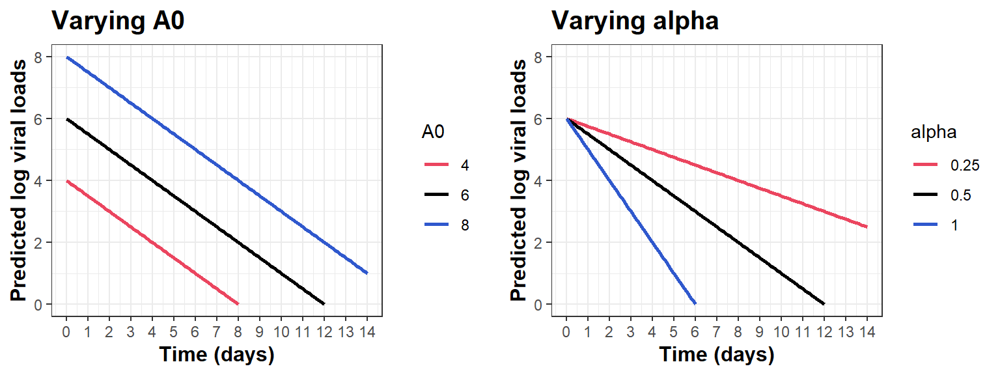
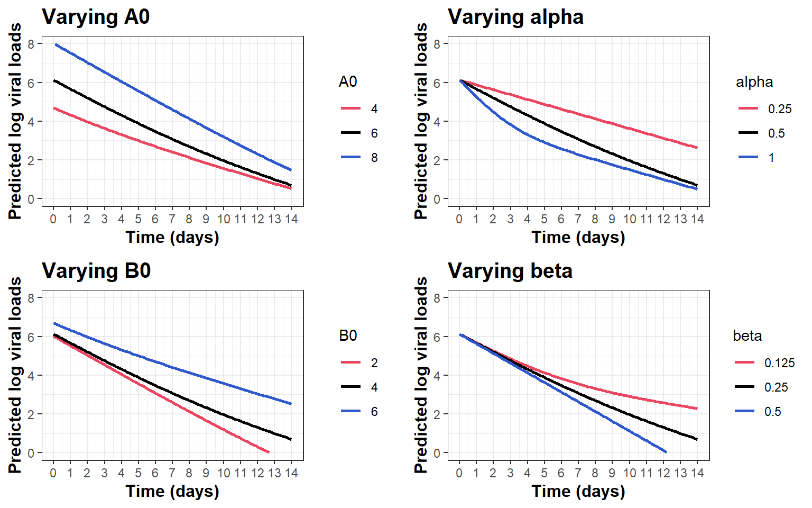
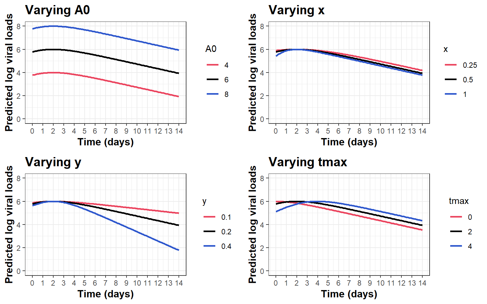
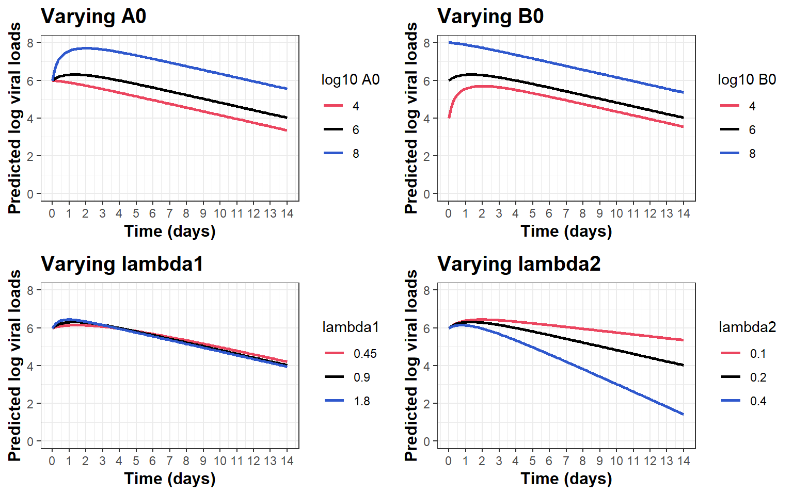

Exploring non-linear models for viral load dynamics
Document descriptions
This document aims explore alternative non-linear model(s) for viral load dynamics from tonsil swab data. Models explored in this documents include:
Log-linear decay model
Bi-exponential decay model
Up-and-down model
Two-compartment kinetics model
This analysis is a part of the PLATCOV project, and potentially the AD ASTRA project.
Model characteristics
1. Log-linear decay model
\[ f_{vl}(t)=A_{0}-\alpha t \tag{1}\]
2. Bi-exponential decay model
\[ f_{vl}(t)=\ln(e^{A_{0}-\alpha t}+e^{B_{0}-\beta t}) \tag{2}\]

3. Up-and-down model
This section explores the original non-linear model used in our previous analyses, as described in Watson et al. (2022), see Equation 3. \[ f_{vl}(t)=A_{0} + \ln\left(\frac{x+y}{ye^{-x(t-t_{max})}+xe^{t-t_{max}}}\right) \tag{3}\] This model describes viral load dynamics by fixing the maximum viral loads of \(A_{0}\) of time \(t=t_{max}\). While the parameters \(x\) and \(y\) control the rates of increasing viral loads before \(t_{max}\) and decreasing viral loads after \(t_{max}\), respectively (see Figure 3).

Remarks on Model 1: Original non-linear model
The model is quite rigid, suggested from varying the parameters. The declining phase looks almost linear in all scenarios.
The rate controlling parameters (\(x\) and \(y\)) do not have a plausible biological interpretation.
\(A_{0}\) and \(t_{max}\) are sensitive to the infectious time points and the moment of recruitment.
4. Two-compartment kinetics model
xxx
\[ \frac{dB(t)}{dt}=\lambda_{1}A(t)-\lambda_{2}B(t) \tag{4}\]
xxx
\[ B(t)=\left( \frac{\lambda_{1}}{\lambda_{2}-\lambda_{1}}\right)A_{0}\left(e^{-\lambda_{1}t}-e^{-\lambda_{2}t}\right)+B_{0}e^{-\lambda_{2}t} \]
xx
\[ \ln\left(B(t)\right)= \ln \left( \left( \frac{\lambda_{1}}{\lambda_{2}-\lambda_{1}}\right)e^{\ln A_{0}}\left(e^{-\lambda_{1}t}-e^{-\lambda_{2}t}\right)+ e^{\ln B_{0}}e^{-\lambda_{2}t}\right) \]

References
Watson, James A., Stephen M. Kissler, Nicholas P. J. Day, Yonatan H. Grad, and Nicholas J. White. 2022. “Characterizing SARS-CoV-2 Viral Clearance Kinetics to Improve the Design of Antiviral Pharmacometric Studies.” Antimicrobial Agents and Chemotherapy 66 (7): e00192–22. https://doi.org/10.1128/aac.00192-22.